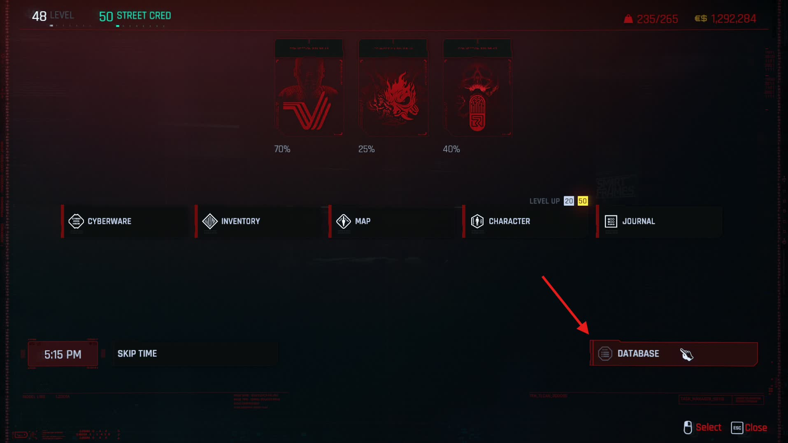
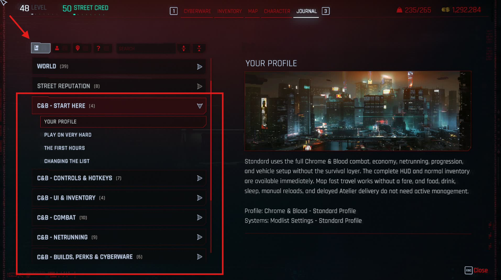
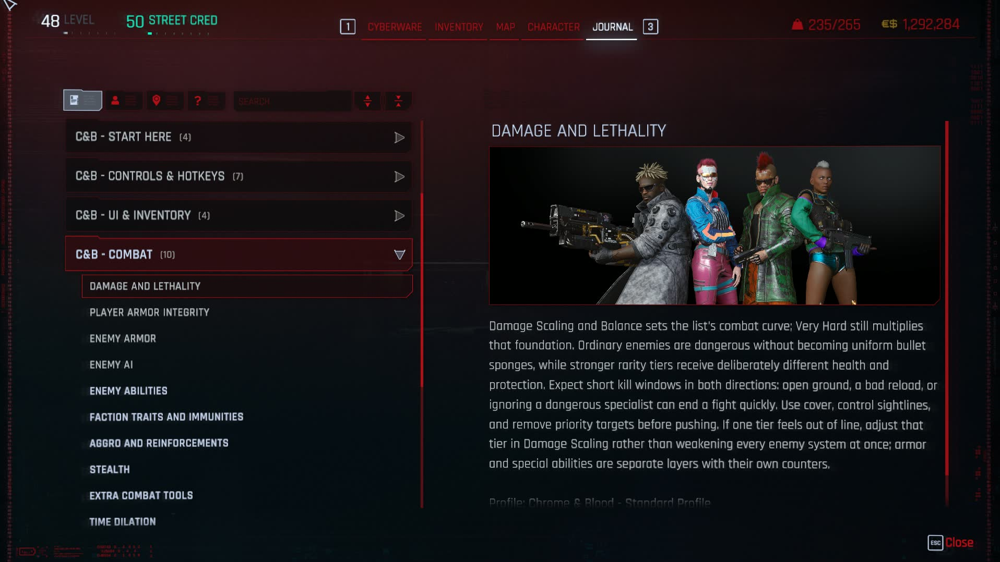

The full Chrome & Blood Player Guide is now in-game. Press H to open the Character menu, select Database, choose the first category, then open any section beginning with C&B.
Your Guide Is In-Game
The Player Guide follows the profile you launched, so Standard and Immersive instructions appear where they are actually relevant. It also keeps controls, mechanics, counters, and troubleshooting beside the game instead of splitting them between browser tabs.
- Press H to open the Character menu, then select Database.
- Select the first Database category, then look for sections beginning with C&B.
- Start with C&B - Start Here and C&B - Controls & Hotkeys.

What the Database Covers
- Start Here — your selected profile, difficulty, first hours, and safe ways to change the list.
- Controls & Hotkeys — current keyboard, mouse, and controller bindings.
- UI & Inventory — HUD behavior, loot markers, inventory tools, and visual options.
- Combat — lethality, player and enemy armor, AI, abilities, reinforcements, stealth, and time dilation.
- Netrunning — network access, Breach, traces, enemy netrunners, quickhack progression, and recovery.
- Builds, Perks & Cyberware — perk systems, chrome limits, new cyberware, build planning, and crafting.
- Economy — earnings, payouts, district reputation, services, and added gear.
- Vehicles & Travel — handling, combat, nitrous, garages, and profile-specific travel rules.
- Jobs & The World — fixer progression, repeatable work, added content, and world reactions.
- Profiles & Troubleshooting — nighttime visibility, profile checks, performance, support, and the boundary for custom changes.
- Immersive Profile (Immersive only) — survival needs, manual reloads, paid travel, delayed deliveries, hidden dialogue, and vehicle sleep.

How Chrome & Blood Is Balanced
The list is built around short, dangerous fights on Very Hard. The included profiles keep base enemy Health low across every rarity tier. Tough enemies earn their staying power from armor, abilities, equipment, AI, and encounter role instead of inflated Health bars.
Enemy armor is now a visible resource with one to four segments. More segments mean more armor to break, while penetration, hit location, heat, and repair abilities change how efficiently you can strip it. Once armor is gone, the low Health underneath matters immediately.
The same principle applies to V: mistakes hurt, cover matters, and a stronger build gives you better answers rather than permission to ignore the fight. The in-game Combat section explains the individual layers and their counters.

Customize the List with UMS
Press Numpad 0 to open Unified Mod Settings. Chrome & Blood groups the settings browser by the part of the game you want to change, so you do not need to know which mod owns an option before looking for it. Search and favorites remain available when you already know what you want.
- COMBAT, ENEMIES & DIFFICULTY — damage, Health, armor, AI, abilities, reinforcements, and challenge.
- WEAPONS & GUNPLAY — weapon behavior, recoil, firing modes, ammunition, ricochets, and impact.
- NETRUNNING & STEALTH — Breach, quickhacks, traces, detection, optical camo, and stealth systems.
- BUILDS, PERKS & CYBERWARE — perk frameworks, cyberware systems, operating systems, and build rules.
- ECONOMY, LOOT & CRAFTING — prices, payouts, vendors, loot behavior, crafting, and added stores.
- VEHICLES, TRAVEL & CUSTOMIZATION — handling, driving assists, travel, garages, and vehicle options.
- WORLD, QUESTS & IMMERSION — world encounters, jobs, reactions, weather, survival, and roleplay systems.
- HUD, ACCESSIBILITY & CONTROLS — interface visibility, markers, input, camera, and accessibility choices.
- INVENTORY & QUALITY OF LIFE — inventory presentation, quickslots, previews, and everyday conveniences.
- VISUALS & PERFORMANCE — exposure, LOD, graphics features, and performance-sensitive options.
Change one system at a time and test it before changing another. The Standard and Immersive profiles are balanced packages; replacing or removing mods is still covered by Rule 11.
Need Help?
Use the in-game guide for gameplay questions and current controls. Use the FAQ for installation, updates, performance, crashes, and common technical problems. If neither answers it, bring the details to the Discord.